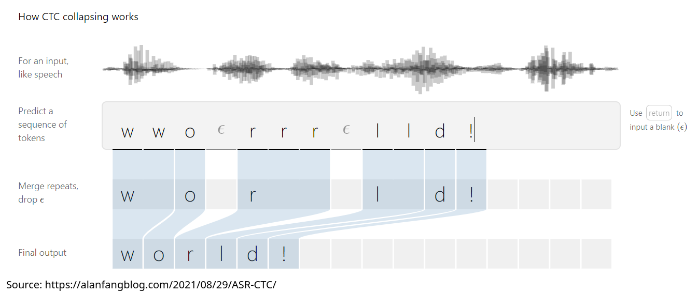
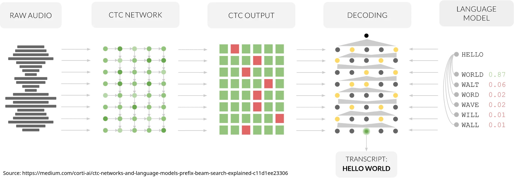
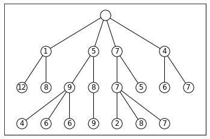
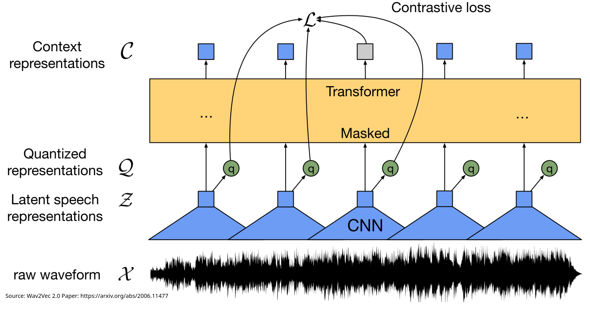
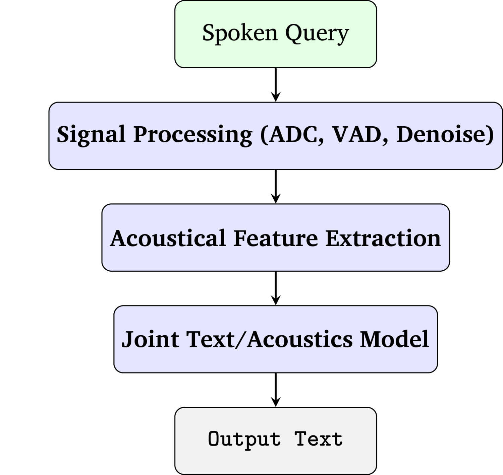
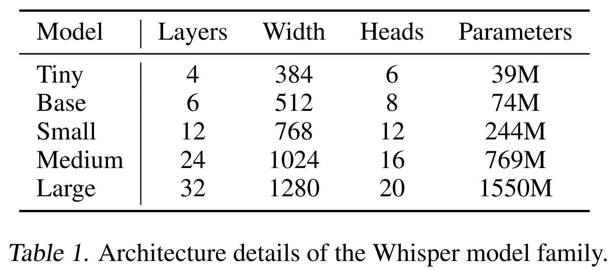

# Neural Speech Recognition ### Will Styler - LIGN 168 --- ### So, now we know what Neural Networks are - We understand their pros, their cons, and their various types - **How can they be applied for ASR?** --- ### Today is just a sampler platter - There are hundreds of ways to do this task - We're going to talk about a few interesting approaches - As always, you can dive deeper if you'd like --- ### Today's Plan - Spectral and CNN-based Approaches - The Alignment Problem - Sound-to-Vector Models and Wav2Vec 2 - Whisper - Neural ASR is boring --- ## Spectral and CNN-based Approaches --- ### So, we know Neural Networks win at ASR - ... but how do we give acoustical data to these models? --- ### Spectral Representations as Input - "Let's give the model a spectrogram directly" - Often something like a logged mel spectrogram - Sometimes something like a mel cepstrogram - Sometimes a png file of a spectrogram itself - Please don't --- ### Once we have a grid containing useful acoustic data... - Treat it like any other image! - Convolutional Neural Networks excel at finding patterns in images - Spectrogram reading is just finding patterns in images - Neural Network training will ensure you find the right patterns --- ### You can go from spectrogram to phones! <img class="r-stretch" src="img/nn_conv_fullpath.jpg"> --- ### Now you just need to match those phones to words - ... which raises.... --- ## The Alignment Problem --- ### Note that 'alignment' has many meanings in ML - "Is this system going to do what I want it to do, for the reasons I want it to do it?" - "Are these two things synchronized, ordered, and time-aligned properly?" - This is the problem we have today! --- ### Some tasks have one-to-one input/output alignment - "Is this picture a rabbit or a cat?" - "Would this Instagram user buy diet pills, based on their follow list?" - "Is this email likely an attempt to purchase chemical weapons?" --- ### Other tasks have ambiguous alignment - "Detect motion in this noisy video feed from the warehouse" - "Identify all characters in this cursive sentence" - "Take this music and generate a score for it" - **ASR!** --- ### Alignment is hard in ASR - I have an input waveform which describes a sequence of phones - e.g. /lɪŋgwɪstɪks/ - I have a set of output characters I'd like from that - e.g. "linguistics" - You'll likely need to process the sound frame-by-frame --- ### Alignment for a given frame is hard - Not all frames contain a character - Some characters take more than one frame to complete - A long /i/ vowel might be several frames long - Some characters are repeated - 'Mississippi' doesn't involve multiple /s/ or /p/ - **Any ASR approach needs to address this!** --- ### Connectionist Temporal Classification (CTC) is one way - Let's assume something allows us to assign every frame to a likely category label (e.g. phone) - Create a list of possible output labels (e.g. 'cat', 'penguin', 'access') - If output repeats characters place a blank ('-') into the label between the repeated items ('ac-ces-s') - "If a frame label repeats across multiple frames, it's probably the same chunk" - "If an output label has a blank between, it's probably just one chunk" --- ### CTC Collapsing  --- ### CTC just finds the most likely path through the options - Sort of like decoding an HMM using the Viterbi algorithm - "What's the output label(s) for this sequence that best fit the data?" - Now, you can match a series of frame labels, to the most likely output labels - **The probability of the correct choice being made is also a good loss function!** --- ### CTC Decoding  --- ### We can unite the output with a language model <img class="r-stretch" src="diagrams/asr_architecture.jpg"> --- ### ... and we figure out the most likely candidates - Either choose the most likely candidate over and over given both acoustic and language model data - "Greedy" decoding - Or you do [Beam Search](https://en.wikipedia.org/wiki/Beam_search) to identify multiple candidates - You limit the number of candidates to consider at once - Then, choose the sequence with the highest overall probability --- ### Beam Search  (Source: BogdanShevchenko - Own work, CC BY-SA 4.0, https://commons.wikimedia.org/w/index.php?curid=128835919) --- ### Now we have a working ASR model! - We get predictions from the acoustics by feeding - We match those to word representations using CTC - We can unite this with a language model, evaluating probabilities using beam search - This can turn a sequence of phones into a transcript! --- ### That's amazing! - ... but can't we make this simpler? --- ## Sound-to-Vector Models and Wav2Vec2 --- ### It would be nice not to need to generate spectral represenations - What if we could turn the waveform into a vector directly, and just go end-to-end? - This leads to approaches like... --- ### Wav2Vec - Developed by Facebook's AI team - Takes in a waveform directly, and outputs higher quality features for use in ASR - **Feature Encoding:** Uses CNNs to create 'latent representations' every 10ms or so - These aren't exactly segments, they're just 'things the network notices' - **Context Network:** Combines the features to capture adjacency effects --- ### Wav2Vec is trained in a *self supervised* way - We're going to take away ('mask') some of the representations coming out of the model - Now, we make the algorithm predict what's missing - The loss function involves correctly choosing the missing representations, among a random set sampled from elsewhere - **This allows it to learn without as much labeled data** --- ### Wav2Vec 2.0 - Same idea, but the encoded features get quantized to a set of specific 'tokens' - Tokens are kind of like phones, but not 1-to-1 - We get a sequence out of the waveform - The context network can now be a transformer - This has all the benefits, plus easy fine-tuning for new languages or tasks - **You can map these tokens to whatever representation you'd like** - Phones/Diphones/Triphones - IPA characters - Even direct to orthography! --- ### Wav2Vec2  --- ### Wav2Vec2 can go from sound to orthography! - This is absolutely wild, given how bad our writing system is! - It also doesn't need CTC, as that's a part of the transformer's core competencies - These quantized units raise the possibility of a language-independent ASR system! - The 'Universal Transcriber' --- ### Wav2Vec2 replaces the entire acoustical pipeline <img class="r-stretch" src="diagrams/asr_architecture.jpg"> --- ### To 'Decode' Wav2Vec2 data into words You combine the token-representation with a separate language model to find hypotheses - Again, you can use probabilities and/or beam search to find the best approach - Some people are trying to make this *fully* end to end, building the language model into the Wav2Vec Model - We'll see an example of this shortly! --- ### This is a working ASR system! - Wav2Vec2 goes from acoustics to quantized tokens - Those tokens can be mapped directly to linguistic units - Linguistic units plus a language model give probabilities for outputs - Output probabilities can be beam-searched, to arrive at the best transcription - **We've gone from Waves to Words in just two steps!** - ... and they're both very boring steps --- ### You can also build on this system! - You can take an existing model, and fine tune with a bit of data for another language - So, we use a model trained on all speech, and then fine tune on Tira - This is great for low-resource languages - [Char Siu](https://github.com/lingjzhu/charsiu) turns Wav2Vec2 into a forced aligner - "Find me the exact temporal boundaries of these segments" - **Open Models make the world better!** --- ### This is a very common setup now - It's not often revealed how commercial ASR systems work - Secret Sauce abounds! - We should assume many systems are using a similar architecture under the hood! - ... but at least one system is different! --- ## Whisper --- ### Whisper is an ASR Model from OpenAI - It does transcription - It also does time-aligned transcription (e.g. for video captioning) - It does some multilingual ASR and translation too! - This is a neat trick! - It also can be used for language identification! - It is shockingly good! --- ### Whisper performs nearly as well as human transcribers <img class="r-stretch" src="phonmedia/asr_whispervshumans.png"> --- ### You can actually use it!! - It is free and open - Unlike anything OpenAI does these days - You can use and download the models for free - <https://github.com/openai/whisper> - It's been tuned to run (slowly) even without a GPU! - This allows fully local transcription!! --- ### Whisper uses a hybrid of CNNs and Transformers <img class="r-stretch" src="phonmedia/asr_whisper.png"> --- ### Whisper embeds the language model into the acoustic model! - There is no separate hypothesis step and no separate language model! --- ### Classical ASR Architecture <img class="r-stretch" src="diagrams/asr_architecture.jpg"> --- ### Whisper's End-to-End Architecture  --- ### Whisper offers a number of models  --- ### Whisper works (mostly) great! - It's probably the right choice for transcribing files at the moment! - ... it's also the last neural ASR architecture we're going to look at this quarter! --- ## Neural ASR is boring lately --- ### This is a rant - Many people have lovely careers, and the tools are exhilaratingly powerful - ... but... --- ### Neural ASR has largely abandoned linguistics - "Feed in waves and text to a transformer, cook for two weeks, then have a model" - There is no linguistic nuance - There's not even transcription anymore! --- ### More parameters == More Better - Thus, more memory and energy cost generally wins - This privileges large companies with large resources - This focuses development on wealthy languages and groups --- ### ASR is approaching 'solved' for high-resource people - For the mainest-stream speakers of American English, ASR is amazing - ASR performance for me is at a place I didn't expect to see in my lifetime - There is room for improvement, to be sure, but it's not a lot of room - Most of the improvement is in brittleness with other dialects and variation --- ### The most interesting work in ASR right now is for low resource languages - How do we get *great* ASR working for a language with low amounts of data/money/hardware? - Imagine your language not having voice-to-type? - How can we use ASR to more quickly generate, study, and clean language data? - How can we use ASR to enable field work and linguistic inquiry more effectively - **How can ASR help people who the tech industry doesn't care enough to help?** --- ### For information on this, talk to Mark Simmons! - He's in the trenches with these ideas right now! - ... and we'll hear from him next time! --- ### Wrapping up - Feeding spectral information into CNNs is a great way to extract features - You need to solve the alignment problem, either with CTC or Transformers - Wav2Vec2 offers a path straight from audio to intermediate representations - ... which can be fed into a language model - Whisper is free, great, and completely end-to-end! --- <huge>Thank you!</huge>